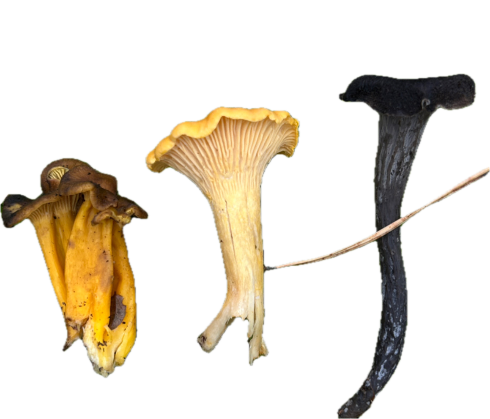
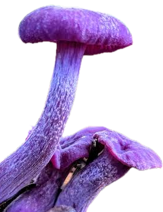
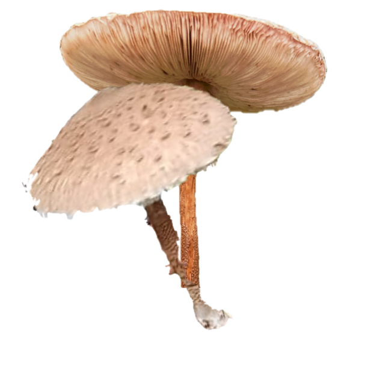

Penny bun
How does it look like?
Thick stem and porous undercap, brown color. Doesn't stain.
What does it smell like?
Smells like a mushroom bulion cube
Where does it grow?
Grows in forests with pine, oak, spruce, etc.

Chanterelle
How does it look like?
Chanterelle is the common name of several species of agaricomycetous fungi in the genera Cantharellus, Craterellus, Gomphus and Polyozellus.
These fungi are orange, yellow or white, meaty and funnel-shaped.
What does it smell like?
Many species emit a fruity aroma. The smell of autumn and leaves.
What does it taste like?
Often they have a mild peppery taste
Where does it grow?
Grows in forests of Sweden near oak, likes moss and open areas too.
Any precaution I need to take?
Do not collect mushrooms next to the highways and roads. Do not go to pick mushrooms alone in the forest you do not know without any form of a map or gps, you can get lost and die.


Fly agaric
How does it look like?
Bright red cap with white spots. The fruiting body can get super big.
What does it smell like?
No distinct smell, no 'mushroomy' smell at all.
Where does it grow?
Grows everywhere in the forests of Sweden.

Amethyst deceiver
How does it look like?
It is small and purple, quite bright. Fades with age and weathering. Edible, but not the best taste.
What does it smell like?
No particular smell.
Where does it grow?
Grows in forests of Sweden near beech, pine, etc.

Panther cap
How does it look like?
Brown cap with white dots on it. White stem with a ring becomes thicker at the bottom. Grows from an 'egg'.
What does it smell like?
The odour is unpleasant or like raw potatoes.
Where does it grow?
Grows everywhere in the forests of Sweden among pines, beech.

Parasol mushroom
How does it look like?
Cream cap with brown dots, a long brown stem with a ring that slides. The fruiting body can get super big, bigger than a palm of a hand.
What does it smell like?
Smells very good, like a tasty mushroom soup.
Where does it grow?
Grows in the fields in the grass, easy to sport because of their size.